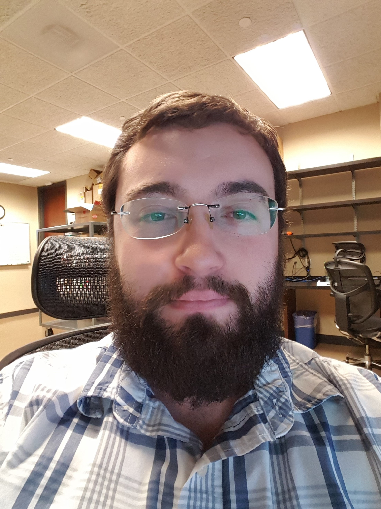

Ricky Barnwell
Bio
My name is Ricky Barnwell.
I grew up in the small town of Eastman, Georgia.
I decided to pursue a degree in Computer Science in 2012 after watching videos on video game programming and wanted to learn more.
I initially attended Middle Georgia State University and then transferred to Georgia State in 2014.
I took the full year of 2016 off and pursued a career in general IT, and then returned to classes in 2017 to finish classes and attain a Bachelor's degree.
I currently stand to graduate in the Fall of this year.
I am married to a wondful woman and we have two cats and a beagle together.
I am hoping to get a job in software development after getting my degree.
Headshot

Resume
Ricky Barnwell
2075 Lake Park Dr SE Apt K
Smyrna, Ga 30080
478•230•7455
barnwellrd@gmail.com
EXPERIENCE
Ultimate Software , Atlanta, Ga — Desktop Engineer — December 2015 - January 2017
• Provided immediate technical support to over 3,000 users within the company’s domain.
• Provided support to customers via Service Now HelpDesk incidents and remotely through GoToAssist
• Responsible for repairing both hardware and software issues across multiple scopes
• Deployed applications, software updates, and policies through SCCM
• Managed user accounts through ARS (Dell Active Directory)
• Built new hire computers utilizing MDT, SCCM, and Casper
• Provisioned and set up equipment for users
Starwood Hotels & Resorts Worldwide, Atlanta, Ga — IT Coordinator — July 2015 - December 2015
• Provided immediate technical support to 250 users within the company’s domain.
• Developed automated backup audits for individual computer backups in Visual Basic.
• Set up and managed user accounts and permissions through active directory.
SP Fiber Technologies, Dublin, Ga — IT Intern — May 2014 - September 2014
• Provided support for and maintained 500+ computers on the company network.
• Developed an inventory tracking application in Java that utilized SQL queries to maintain a secure database through Microsoft SQL Server.
• Developed and provided support for applications that manage server resources with C# and Visual Basic.
• Provided end-user support through support tickets for generic IT related issues as well as company utilized applications.
• Programmed methods to handle data for InfoPath projects in C#.
EDUCATION
Georgia State University, Atlanta, Ga — B.S. in Computer Science — January 2014 - Present
Career relevant study:
• Java Fundamentals (Java OOP)
• Java Data Structures
• System-Level Programming (C & Python development in Unix)
• Embedded Systems (C & Assembly development for microprocessors)
• Computer Org. & Programming (Java Opcode JVM development)
Middle Georgia State University, Cochran, Ga — A.S. in Computer Science — January 2010 - December 2013
Career relevant study:
• Java Development Through Data Structures
• OOP in C++ Development Through Data Structure
• VB.NET Application Development
PROJECTS
C# HTML Web Server — HTML server
• A simple, custom-built server, developed in C#, that utilized sockets to connect with clients.
• Interprets local files into code that is readable through browsers via URLs, POST & GET functions.
• Supports popular formats such as HTML, XML, JavaScript, JPEG, JPG, PNG, GIF, TXT, MP4, and OGG.
Inventory Tracking Application — Java app
• An in house Java application that utilizes Microsoft SQL Server to provide a GUI to interact with, modify, and track inventory contents.
Backup Auditing Sheet — Excel/VBA app
• An automated Excel data sheet that is developed in VBA with the use of macros that scan a server’s file directories.
• It is used to audit each computer’s backup on the company’s domain to ensure backups are up to date.
LED Tailgating Deterrent — School Project (Embedded Systems)
• Created an LED board that used an Arduino and a supersonic proximity sensor that flashed messages to tailgating traffic.
• The project also had an Android app that allowed the user to create custom messages and change the LED board’s colors.
• Programmed in C.
SKILLS
• Developing and debugging software applications in C#, VB, C++, Assembly, JavaScript, HTML, CSS, and Java.
• Developing applications in Visual Studio that utilize Microsoft SQL Server using the .NET framework.
• Reading and writing to databases using SQL queries and stored procedures.
• Servicing support tickets and debugging end-user applications.
• Utilizing various Microsoft Office applications such as Word, Excel, Access, Infopath, and Sharepoint.
• Managing user backups through Mozy and GFI
REFERENCES
Sean Kacen 404•396•1577 Coworker at Ultimate Software
Loren Schenck 404•644•1515 Manager at Starwood Hotels & Resorts Worldwide
Hobbies
I enjoy reading science fiction and fantasy novels, playing video games, cooking, and watching Netflix and HBO.